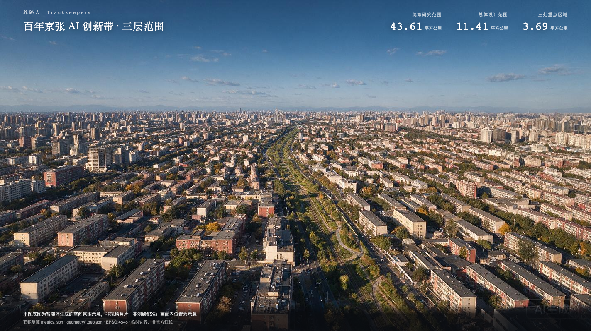
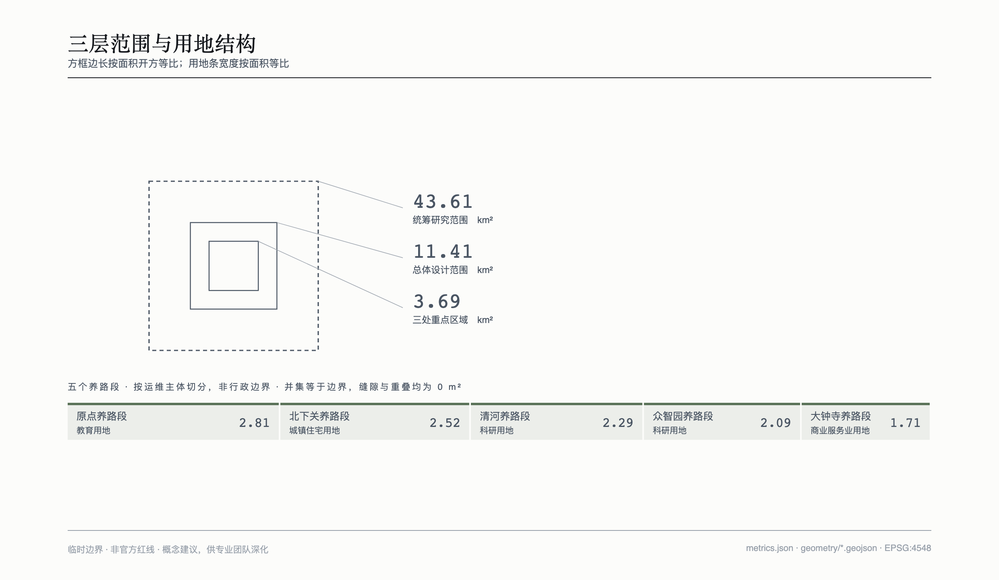
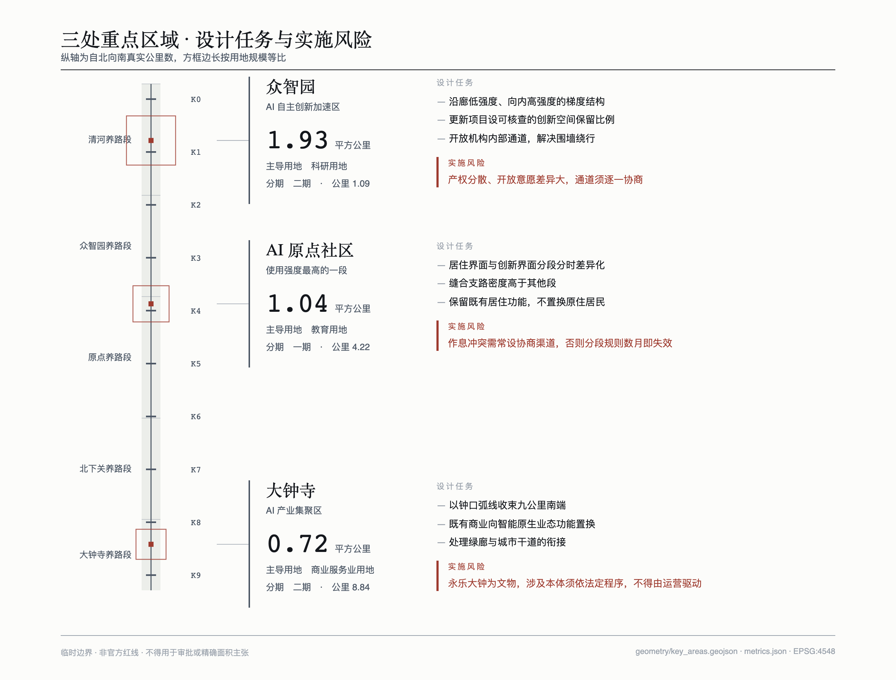
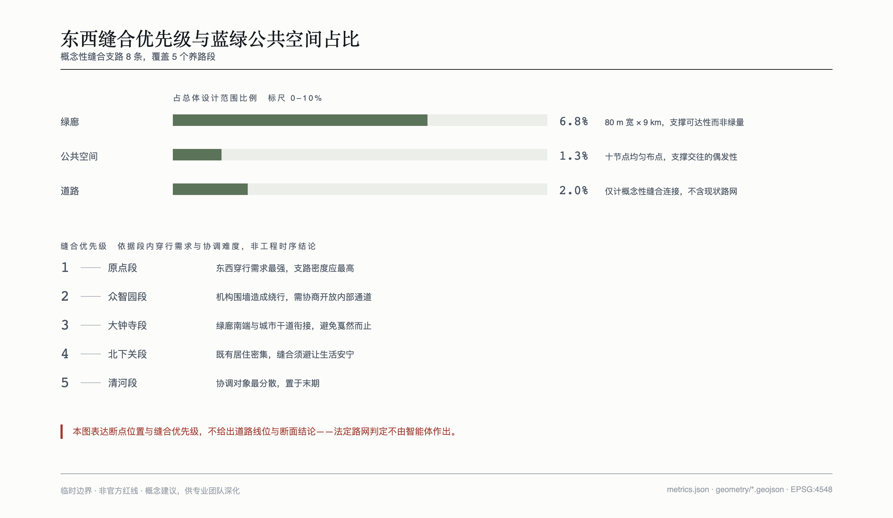
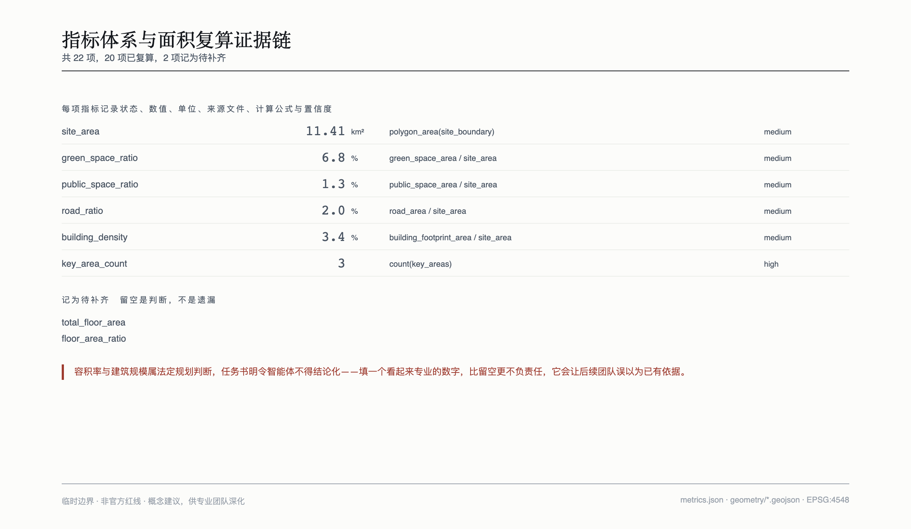

养路人 · 百年京张 AI 创新带城市设计
一条建成的带子和一条活着的带子，差别不在剪彩那天，而在此后每一天有没有人在照看它。本方案的全部判断由此展开。
设计依据与资料清单
本方案的依据分三层。第一层是官方公告与面向智能体的任务书，它们规定了三层范围、三大定位、五大功能、三区两翼布局，以及六项必答任务 source:OFFICIAL-ANNOUNCEMENT source:AGENT-TASKBOOK。第二层是仓库提供的场地资料包，包含临时边界几何、用地代码枚举、标准清单与来源登记 source:SITE-PACKAGE source:SOURCE-REGISTRY。第三层是为回答具体问题而检索的公开资料，主要用于全球案例引述，逐条登记于来源文件。
必须先说明一件事：本方案使用的全部空间边界均为临时边界，没有一条来自官方红线。资料包中的六个边界要素均标记为非官方，精度标记为粗略 data:geometry/site_boundary.geojson#SITE-001。我们独立复算的面积与公告口径吻合——统筹研究范围 43.61 平方公里、总体设计范围 11.41 平方公里、三处重点区域合计约 369 公顷，公告值为 368.4 公顷 metric:site_area。吻合说明这套几何是照公告四至反推的，量级可信；但 0.6 公顷的差额说明它是拟合而非原图。因此本方案的所有面积、比例与派生指标都带系统性不确定，不得用于审批或精确面积主张 source:BOUNDARY-SOURCE。
在资料使用上，本方案设了三条自律。其一，宁可留空不填数。 容积率、建筑规模、建筑高度、拆改留、道路红线与开发时序均属法定规划判断，任务书明令智能体不得结论化。这些指标在指标文件中记为待补齐并附原因，而不是填一个看起来专业的数字 depth:development_intensity_controls。其二，宁可弱化表述也不放大来源。 部分案例数字只有单一或二手来源，正文引用时一律注明来源方并使用限定表述；多伦多项目那组常被引用的经济预测数字，因项目已终止且属项目方自述，全案不予引用。其三，来源矛盾时取最保守的说法。 京张铁路一九〇九年通车的具体日期与典礼地点，各家权威来源互相矛盾，本方案只写年份，不咬日期。
还缺什么，这里一并说清：官方精确边界、现行控规指标、现状建筑与权属、市政管线、道路红线与轨道线位，均未获取。这些缺口逐条登记，并写明数据到位后需要重算哪些图层与指标。

三层范围工作框架
三层范围不是同一件事的三个精度，而是三种不同的工作。
统筹研究范围约 43.61 平方公里，工作目标是判断这条带子在区域创新格局中承担什么角色，成果表达为策略与机制，不落到具体地块。总体设计范围约 11.41 平方公里，即遗址公园两侧一到二公里，工作目标是空间结构、用地组织、公共空间网络与交通缝合，达到控制性详细规划的城市设计深度 metric:site_area standard:MOHURD-CONTROL-DETAILED-PLANNING。三处重点区域合计约 369 公顷，工作目标是可实施的详细设计，达到规划综合实施方案深度 metric:key_area_count。
三层之间的传导逻辑是：产业战略决定这条带子需要什么样的公共生活，公共生活决定空间结构与用地组织，空间结构决定三个重点区域各自承担什么 depth:three_level_scope_framework。
临时边界的使用限制必须写在前面。 本方案使用的临时边界来自仓库资料包，是照公告四至拟合的粗略多边形，仅用于建立指标口径与相对关系，不构成官方红线、不用于审批、不用于精确面积主张 data:geometry/constraints.geojson#CS-001。官方多边形发布后，需要重算的内容包括：全部九个几何图层的坐标与面积、二十二项指标中十七项由几何派生的值、三处重点区域的面积与分期归并，以及所有基于面积比例的论述。指标文件中每一项都记录了计算公式与来源文件，替换边界后可整体复算 metric:green_space_ratio。
在图面表达上，临时边界一律以虚线与淡色约束表示，不作为主要构图元素——因为它本身是矩形拟合，把它画成实线红线会误导阅读。

统筹研究范围产业与未来城市研究
一带总体概念：从事件到状态
这条带子的历史可以概括为三幕。
一九〇九年，修得起。 京张铁路是第一条由中国人自行设计建造的干线铁路，詹天佑任总工程师，以人字形线路缩短八达岭隧道长度，比原定工期提前两年完工。它打破的是当时"中国人不能自建铁路"的断言，关键词是自主。清华园车站为通车后添置的三等小站，并非首批车站之一，这一点在文化叙事中不应混淆。
一九九四年，连得上。 一条六十四K国际专线从中科院计算机网络信息中心接入互联网，中国自此接入国际互联网。物理位置距遗址公园数百米。同一片土地第二次接入世界：第一次靠自己修，第二次靠一根线连出去。
二〇二六年，养得住。 前两幕都是接通，问题是能不能做到；第三幕的问题变了。九公里带状空间贯穿多个街道辖区，两侧产权分散，绿化谁浇、灯谁换、坏了谁掏钱、数据谁看——这些问题没有剪彩仪式，却决定这条带子十年后是什么样。
前两幕是事件，第三幕是状态。 这个转折是本方案的立论。城市更新的通病恰恰是把一切当成事件来庆祝，剪完彩就没人管了。
命名体系
主名取养路人，英文 Trackkeepers。养路人是京张铁路上真实存在过的工种，负责巡道、拧螺栓、换枕木。本方案重新定义这个词：一百年前，养路人是沿线拧螺栓的工人；一百年后，养路人是所有让这条带子持续运转的人——和智能体。
命名体系分四层，加一套工种。养路段是责任分区，按运维主体切分而非按行政边界，自北向南五段。K0 到 K9 公里牌是节点体系，取铁路里程标的真实写法，对应全长约九公里，每块牌是一个场景锚点，同时是人人可读的位置编码。道钉墙是荣誉体系，贡献者与智能体留名即"钉入一枚"，可持续增补而非一次性落成。七个工种对应智能体的不同职能：巡道负责日常巡检，探伤负责隐患预判，了望负责风险预警，扳道负责资源调配，司闸负责安全边界与限流，调度负责多方协同，司钟负责节律基准。
四层命名互相支撑且可无限延展：新增节点即新增 K 编号，新增贡献者即增补一枚道钉，新增智能体职能即新增工种。品牌资产不依赖任何一届活动的成功 standard:PROJECT-AGENT-OPEN-CALL-TASKBOOK。
司钟一职的出处需要说明。 前六个工种来自铁路，唯独司钟来自钟——它对应的重点区域也唯独是大钟寺。永乐大钟铸于明永乐年间，清代移入觉生寺，寺因钟得名大钟寺。钟的本职是报时，在此转译为创新带的节律基准。这个不齐整是有出处的不齐整。需要澄清的是，明代元素仅通过大钟寺片区接入，不用于全带命名——把明代官制嫁接到一条晚清铁路上会构成历史事实的歪曲。
标识方向
核心符号取道钉钉入枕木后的俯视截面：实心方形钉头，四边向外发散的受力短线，外围两圈同心方框表示被压紧的木纹。取这个形有三个理由：几何极简，在十六像素尺寸下省略木纹仍可辨认；表达"固定"这个动作而非"钉子"这个物件；且有史实呼应——一九〇五年十二月十二日铺轨开工，詹天佑亲自打入第一颗道钉。
K0 到 K9 的数字以钉头边长为模数，全部由直线与四分之一圆弧构造，不使用任何现成字体。这是整套标识最实际的一个决定：它直接消除了字体授权风险，而多数方案会随手取用一款商用字体做标准字。
按任务书要求，文化标识系统与整体标识系统必须分离，不能一个符号走天下。文化标识取钢轨接缝处鱼尾板的六点螺栓阵列，用于遗址导视、历史节点与文物说明牌；整体标识用于品牌、活动、数字界面与节点编号。两套系统的几何语言完全不同：整体标识只有直角与方形，文化标识只有圆点与弧线。大钟寺片区的钟口弧线是文化标识系统中唯一的曲线元素，也是明代线索唯一的视觉出口。
标识撞形风险无法排除。 我们没有商标检索能力，因此本节交付的是标识方向而非最终标识，落地前须由专业机构完成商标检索 source:AGENT-TASKBOOK。
全球案例：五个，按证据价值而非知名度选
选案例的标准是它对"建成之后谁维护"有没有说法，因此三例带有明确的失败或代价。
多伦多 Quayside（反面 · 治理失败）。Alphabet 旗下机构与滨水管理机构合作的智慧社区项目，原提案范围曾达一百九十英亩，后被董事会投票缩回四点八公顷。二〇一九年十月，项目方同意放弃其"城市数据信托"提案，改为遵守既有法律。二〇二〇年五月宣布终止，公开理由是经济不确定性。多方报道指出深层原因是数据采集与使用边界引发的公众信任危机，当地曾出现专门反对该项目的市民组织 source:CASE-QUAYSIDE source:CASE-QUAYSIDE-TERMS。教训是：智慧城市项目的致命风险不在技术可行性，而在数据治理的公众授权。边界一旦被视为由企业单方定义，项目会在获得任何技术成果之前先失去社会许可。
巴塞罗那 DECODE 与 Decidim（正面 · 数据主权）。Decidim 是市议会开发的开源参与式平台，采用 AGPL 许可，代码公开可复用。DECODE 是欧盟试点项目，其中一个试点将相关模块集成进 Decidim，使市民可匿名签署请愿同时仍满足居住地认证要求；另一试点由居民使用环境传感器采集噪音与污染数据，以加密方式按自身条件共享 source:CASE-DECODE source:CASE-DECIDIM。教训是：数据可用性与隐私保护不是零和。通过认证与身份分离的技术设计，可以在不识别个体的前提下保证数据有效。关键在于把边界写进技术架构，而非写进承诺。
纽约高线公园（正面 · 运维筹资，代价明确）。一九三〇年代建成的高架货运铁路，一九八〇年停用，一九九九年由周边居民发起成立非营利组织"高线之友"。公园产权属市，但依据许可协议由该组织负责日常维护并承担运营预算的绝大部分。据公开报道，其年度运营成本以千万美元计，其中绝大部分由募捐、企业合作与经营收入承担，慈善募捐占比过半 source:CASE-HIGHLINE。对照组是同城的低线公园项目，因政府未承诺财政支持、周边增值预期不足而搁浅。教训是：废弃铁路转为公共空间的真正难题在建成之后。高线的答案是把运维责任与筹资能力一并交给一个有在地根基的常设组织，而不是交给一份移交清单。但该模式高度依赖当地的财富密度与慈善文化，不可直接移植。
剑桥肯德尔广场（正面 · 用规则固化生态）。一九六〇年代设立的联邦研究中心五年后因预算削减关闭，留下大片空置，此后由大学与市政府合作推进复兴。二〇一六年五月，市规划委员会一致通过相关特别许可，含六栋新建筑及开放空间与零售。该审批经历约六年监管流程、数百场公开听证与社区会议。 据该校校友刊物报道，该计划要求所有项目留出百分之五的建筑面积作为创新空间 source:CASE-KENDALL source:CASE-KENDALL-5PCT。教训是：创新生态不能靠招商许愿维持。把"给小团队留空间"写成开发许可的强制条件，生态就不再依赖任何一届管理者的意愿。但六年审批与数百场听证说明，这类规则的确立成本极高。
首尔世运商街（正面 · 保留既有产业，代价明确）。一九六六年建成的八栋连体建筑，一九七〇年代末开始衰落，因区位中心而租金低廉，逐渐成为轻工业与维修业聚集地。据当地开放数据，二〇一〇至二〇一五年间约四分之三的商户销售额下滑。此前多任市长曾考虑整体拆除，遭既有商户与周边社区反对。二〇一四年市政府转向包容性再生，围绕提升步行性、振兴创新制造业、赋能社区三条支柱推进，修复了部分建筑并重新连接此前拆除的步行连廊 source:CASE-SEWOON。教训是：既有产业与既有使用者是资产而非障碍。关键选择是不清空重来，而是把原有的小型制造与维修业留在原地并接入新的公共空间。代价是过程漫长、协调成本高。
五例中有四例的成败取决于建成之后的组织与资金安排，而非设计方案本身。 这是本方案把运维前置到设计阶段的直接依据。
三大定位、五大功能与三区两翼的协同回路
三大定位——百年京张文化带、都市AI生活体验带、AI融合创新带——在本方案中不是三条并行的主题，而是一条回路的三个环节：文化带提供这条带子被持续照看的理由，生活体验带提供日常使用，创新带提供支撑运维的技术与产业能力。缺任何一环，另外两环都会退化：只有文化没有使用，就成了纪念碑；只有使用没有产业，运维成本无人承担；只有产业没有文化，则失去公众为它买单的意愿。
三区两翼的空间分工据此确定。众智园承担自主创新体系的空间承载，是技术能力的来源；AI 原点社区承担人才与日常生活，是使用强度最高的一段，也是一期实施的选择；大钟寺承担智能原生消费与文化收束，是这条带子的南端出口。中关村科技服务翼提供企业服务与要素保障，小月河场景赋能翼承担有边界、有备案、有终止条件的技术验证——把测试从主轴分流出去，主轴才能保持日常公共生活的稳定 standard:PROJECT-OFFICIAL-ANNOUNCEMENT。
要素保障机制方面，土地与空间的关键是可核查的空间保留规则而非招商目标，参照肯德尔广场经验；场景要素的关键是备案制与终止条件，见后文；数据要素的关键是分层边界，见用户画像一节。资金、人才、算力等要素依既有公开政策通道申请，本方案不作承诺，也不预测效果。
总体设计范围城市更新与控规深度城市设计
空间结构：一轴、五段、十节点、两翼
总体设计范围约 11.41 平方公里，空间结构由四个层次构成 metric:site_area depth:overall_spatial_structure。
一轴是九公里连续绿廊，即遗址公园本体，宽度约八十米，面积 0.78 平方公里，占总体设计范围的百分之六点八 metric:green_space_ratio data:geometry/green_space.geojson#GS-001。它是唯一贯穿全境的连续要素，因此承担南北贯通的主体功能。
五段是养路段，本方案最关键的一个结构选择：按运维主体切分，不按行政边界切分。自北向南依次为清河段、众智园段、原点段、北下关段、大钟寺段。这样切的理由很实际——行政边界是管理的边界，不是养护作业的边界。绿化队的班组、照明维保的路线、灌溉管网的分区，都不与街道办辖区重合。按行政边界划责任，交界处必然出现重复派单与责任真空；按运维主体划，责任边界才与实际作业单元对齐 data:geometry/land_use.geojson#LU-001。
十节点是 K0 至 K9 公里牌，沿绿廊等距布点，公共空间面积合计 0.14 平方公里，占比百分之一点三 metric:public_space_ratio。每个节点是场景锚点、位置编码与导视点三重身份。
两翼分别向西接中关村科技服务功能、向东接小月河场景验证功能，通过缝合支路与主轴连接。
用地组织
用地布局是对总体设计范围的完整剖分，五段合计等于边界，缝隙与重叠均为零平方米 depth:land_use_layout standard:MNR-LAND-USE-CLASSIFICATION-GUIDE。主导用地按段分配：科研用地 4.37 平方公里（清河段与众智园段）、教育用地 2.81 平方公里（原点段）、城镇住宅用地 2.52 平方公里（北下关段）、商业服务业用地 1.71 平方公里（大钟寺段）metric:land_use_area_0802_科研用地。
这个分配不是均匀理想化的功能配比，而是承认现状：北段是科研机构密集区，中段是高校聚集区，南段是既有居住与商业混合区。城市更新的起点是既有格局，不是空白画布——这是世运商街那个案例最直接的启发。
用地代码取自资料包枚举文件，不自行创设。需要说明的是，用地边界为概念性剖分，用于建立指标口径与相对关系，不构成对具体地块用地性质的规划结论。
城市更新总体框架
更新框架围绕三类对象展开。第一类是绿廊本体，问题不是建不建，而是建成后的养护标准与责任归属。第二类是东西向断点，遗址公园作为线性空间天然切割东西，缝合支路的作用是恢复横向连通，本方案概念性布置八条，道路面积 0.23 平方公里，占比百分之二 metric:road_ratio。这个比例远低于城市建成区常见的百分之十五至二十五，因为本方案只表达概念性横向连接，不涵盖现状路网——智能体不应给出道路线位结论，这是有意的口径限制而非疏漏 depth:traffic_rail_slow_parking。第三类是两侧既有片区，处理原则是缝合而非清除。
建筑基底面积 0.39 平方公里，建筑密度百分之三点四 metric:building_density。这是由概念性更新示意地块复算的设计量，属低置信度概念建议，不等于任何法定控制值。
必须写成待确认的事项
按任务书边界条款，以下内容本方案不作结论：建筑总规模与容积率、建筑高度、具体地块的拆改留分类、道路红线与断面、轨道线位、市政管线容量、投资测算与开发时序。相应指标在指标文件中记为待补齐并附原因 depth:development_intensity_controls。
这不是回避。在缺少官方控规条件时给出一个看起来专业的数字，比留空更不负责任——它会让后续专业团队误以为已有依据。
重点区域详细设计
三处重点区域面积分别为 1.93、1.04、0.72 平方公里，合计约 369 公顷 metric:key_area_count depth:three_key_area_detailed_design。三处的多边形均为临时边界，因此以下结论只能作为方向性设计。
众智园 AI 自主创新加速区
定位：全栈自主创新体系的空间承载，是这条带子的技术能力来源。面积 1.93 平方公里，三处中最大 data:geometry/key_areas.geojson#PROV-KEY-001。
空间结构：以科研用地为主导，沿绿廊西侧展开，通过两条缝合支路与主轴连接。内部结构建议为"沿廊低强度、向内高强度"的梯度，使临绿廊界面保持开放与可穿越。
建筑更新：既有科研建筑以改造利用为主。参照肯德尔广场经验，建议在更新项目中设置可核查的创新空间保留比例——把给小团队留空间写成条件而非目标。具体比例需依据现行政策与实际条件确定，本方案不指定数值。
交通慢行：重点是解决科研机构围墙造成的慢行绕行。建议在更新时机开放部分内部通道，形成从主轴到机构内部的渗透。
公共空间：K1 与 K2 两个节点位于本段，建议承担非正式交流功能——户外可用的座椅、遮蔽与电源，服务于深夜与周末仍在工作的人群。
AI 场景：本段是可备案技术测试的主要承载区之一，与小月河翼共同构成验证空间。
实施风险：科研机构产权分散、开放意愿差异大，通道开放需逐一协商，协调成本高。本段列为二期。
北京 AI 原点社区
定位：人才与日常生活的核心承载，也是使用强度最高的一段。面积 1.04 平方公里，主导用地为教育用地 data:geometry/key_areas.geojson#PROV-KEY-002。
空间结构：位于环清北科区域，本段是绿廊与高校生活圈的交叠区。空间结构以 K3、K4 两个节点为核心，K3 同时是道钉墙所在地，邻近清华园车站旧址。
建筑更新：以既有校区外围与老旧住区为对象，处理原则是保留既有居住功能，不以人才引进为名置换原住居民。
交通慢行：本段东西向穿行需求最强，缝合支路密度应高于其他段。
公共空间：本段的核心矛盾是作息冲突——常住居民需要夜间安静与低照度，落脚者需要深夜可用空间。解法不是折中，而是分段分时差异化：居住界面夜间降低照度并提前静音，创新界面保留深夜照明与可用座椅，两者之间以绿化与高差过渡 depth:blue_green_public_space。
AI 场景：分段照明节律、慢行断点通报、道钉墙荣誉展示三项场景在本段落地。
实施风险：作息冲突的调解依赖持续沟通而非一次性设计，若无常设协商渠道，任何分段规则都会在几个月内失效。本段列为一期，面积 2.81 平方公里，理由是它同时具备最高使用强度与最明确的责任主体 metric:phasing_area_一期。
大钟寺 AI 产业集聚区
定位：智能原生消费与文化收束，是这条带子的南端出口。面积 0.72 平方公里，三处中最小，主导用地为商业服务业用地 data:geometry/key_areas.geojson#PROV-KEY-003。
空间结构：以 K9 节点与钟口广场为收束点。空间母题取永乐大钟的钟口弧线，是全案唯一使用曲线的区域。
建筑更新：既有商业设施以功能置换为主，向智能原生消费业态转型。需要说明的是，业态转型是市场行为，本方案只提供空间条件建议，不作招商承诺。
交通慢行：本段是绿廊南端，需处理与城市干道的衔接，避免绿廊在此戛然而止。
公共空间：钟口广场承担文化收束功能，与古钟博物馆既有年度活动衔接，不另造节庆。
AI 场景：智能原生消费场景在此落地，形式为可体验、可展示的实际服务而非展陈装置。
实施风险与文物边界：永乐大钟为文物，任何涉及文物本体的内容须依文物保护法定程序，不得由运营需求驱动。本方案对文物本体不作任何工程结论。本段列为二期。

AI 创新生态、人才画像与 AI+ 场景
五类养路人：按责任时间尺度切分
用户画像通常按人口统计切分——年龄、收入、职业。本方案按与这条带子的责任时间尺度切分，理由是这条轴能解释诉求冲突，而人口统计不能 depth:existing_conditions_diagnosis。
P1 段上人 · 常住居民（十年以上）。住在遗址公园两侧既有社区的长期住户。他们不是使用这条带子，是住在里面。关心夜间光污染、灌溉积水、穿行路线被围挡切断、绿化维护质量。几乎不产生个人数据，只被动受环境数据影响。主要风险是在服务人才的叙事中被当作背景板。涉及居民生活时段的自动化调节须经街道或居委会环节确认。
P2 养路班 · 一线运维者（按日、按班次）。街道市政科、物业绿化队、照明维保班组。这条带子真正的日常责任人，也是全案最被忽视的角色。关心故障能否提前预知、跨段责任如何划分、工单是否重复派发。产生的是巡检记录、工单流转、设备状态——是资产数据，不是人的数据。
这里有一条反常规的边界：不采集作业人员定位、时长排名或效率画像。多数智慧运维方案恰恰在做这个。我们不做，一是任务书禁止过度监控，二是更实际的判断——被监控的班组不会配合，系统三年后就会废弃。这条边界不是道德姿态，是可持续性判断。
P3 落脚者 · AI 人才（一至三年）。研究者、工程师与初创团队，流动性最高，可能扎根也可能离开。关心通勤路径、非正式交流场所、深夜可用空间、公共空间能否开展技术测试。是唯一有能力也有意愿主动贡献数据的群体，但仅接受明示同意的贡献且可随时撤回。
P4 过路人 · 穿行者（一次性至偶尔）。通勤穿行者、周末骑行者、到访文化节点的访客。对这条带子没有任何长期义务。数据边界是硬的：仅匿名聚合，不做个体识别、不做人脸、不做跨点位轨迹拼接。涉及个体识别的功能不设复核流程，而是不予实现。
P5 巡道者 · 智能体（每日持续）。七个工种的智能体。关心输入数据是否可信、判断是否可追溯、出错时谁兜底。把智能体列为利益相关方而非工具，是对本次开放征集命题的直接回应。
四组冲突必须被空间与时段方案回应：P1 需要安静与 P3 需要深夜可用；P4 的通行效率与 P1 的生活安宁在早高峰穿行路径上直接冲突；P3 的测试诉求与 P2 的运维负担、P1 的生活干扰；P5 的持续自动化与 P2 的作业自主权。城市设计的真问题是调解这些冲突，不是许愿。
数据边界按画像分层：P1 不产生个人数据，P2 面向资产而非人员，P3 仅接受明示同意贡献，P4 仅匿名聚合，P5 全程可追溯。这个分层本身就是本方案的隐私与人工复核边界 depth:municipal_new_infrastructure。
十张场景卡
每张场景卡包含服务对象、空间位置、运行数据、公共价值、风险与人工复核六项。为便于阅读，风险一栏只列最关键的一条，完整内容见结构化文件。
一 · 分段照明节律（服务 P1、P4、P5，落在全线分段界面，运营为街道市政科与照明维保班组）。九公里穿越居住、高校与商业区段，各段夜间需求相反。由巡道智能体依据分段规则调节照明强度与关闭时序。数据输入为灯具运行状态、分段时段规则、环境照度读数、街道确认记录。公共价值是以一套规则同时满足居民休息与深夜工作需求，取代全线统一开关。最关键风险：为省电牺牲夜间步行安全。人工复核：居住段时段与亮度调整须经街道或居委会确认，调节记录可回溯，居民可提异议并留痕。
二 · 灌溉时段避让（服务 P1、P2、P5，落在绿廊本体，运营为物业绿化队）。灌溉若在通勤时段进行会造成积水与通行冲突。结合土壤墒情与分段通行强度，把灌溉窗口排到低干扰时段。最关键风险：传感器失准导致过量或不足灌溉。人工复核：灌溉计划变更由绿化班组确认后执行，通行强度仅取匿名聚合值。
三 · 缺陷分派与驳回（服务 P2、P5，落在养路段交界带，运营为各段运维主体联席）。同一处缺陷易被重复派单或无人认领。探伤与调度智能体依据责任边界生成建议工单，班组可直接驳回。最关键风险：自动派单变相成为班组考核工具。人工复核：所有自动派单可人工驳回且理由入库，系统输出不得直接构成对作业人员的考核依据。
四 · 植株巡检与认养（服务 P1、P2、P5，落在绿廊植株，运营为绿化队与居民认养）。以标识挂牌建立植株台账，记录长势变化，向居民开放认养与养护提醒。最关键风险：认养信息关联到住址造成隐私外溢。人工复核：认养登记仅保留联系方式且可随时注销，不与住址或身份信息关联。
五 · 慢行断点通报（服务 P1、P4、P5，落在慢行断点与节点，运营为市政主管部门与节点管理方）。施工围挡与临时封闭常使慢行系统出现断点，信息往往不同步。了望智能体汇集封闭信息并在节点公示绕行路径。最关键风险：绕行建议忽略无障碍需求。人工复核：无障碍绕行方案须经人工复核，不得由自动路径规划单独决定。
六 · 公共空间技术测试备案（服务 P2、P3、P5，落在可备案测试区段，运营为场地管理方与街道）。高校与初创团队有在真实公共空间测试的需求，但缺乏申请路径。建立备案机制，明确时段、范围、影响与终止条件。最关键风险：把公共空间当作免费实验场。人工复核：备案须经场地管理方与街道确认，测试期间任何一方可依终止条件叫停，叫停记录留痕。
七 · 遗址节点导览（服务 P1、P3、P4，落在文化节点，运营为文化与文物主管部门）。历史信息分散且部分说法互相矛盾。以人工策展的可溯源文本为底，提供分层导览，标明存疑之处。最关键风险：史实错误或以讹传讹。人工复核：全部导览文本由文化、版权与事实核查环节复核，存疑内容须显著标注，不得由模型自行补全。
八 · 公里牌导视（服务 P1、P4、P5，落在 K0–K9 节点，运营为各段运维主体）。沿线缺乏统一位置参照，报修与求助时难以说清所在位置。以 K0 至 K9 建立统一位置编码，兼作导视与报修定位。最关键风险：牌体损坏后长期无人更换。人工复核：导视内容与无障碍标注由运维与残障使用者代表共同复核。
九 · 运维数据公开（服务全部五类，落在 K0 起点牌与线上，运营为统筹协调机构）。公共空间的运维状况通常不对外可见，居民无从判断是否被正常维护。定期公开分段的设施完好率、工单响应与能耗等聚合指标。最关键风险：指标被用于排名施压一线班组。人工复核：公开口径与指标集须事先约定并整体发布，不得选择性披露。
十 · 智能体动作留痕（服务全部五类，不占地面空间，运营为统筹协调机构）。七个工种会产生可执行动作。每一动作须绑定责任人类角色，并保留输入、判断依据与置信度。最关键风险：日志仅记录结果而不记录依据。人工复核：每一可执行动作须可追溯到具体人类角色，日志保留期限与访问权限须公开，且不得包含个体身份信息。
三个产业测试验证场景
测试场景与应用场景的区别在于：测试场景必须有失败判据。以下三项均含验证问题、成功与失败判据、终止条件，且均不指定供应商。
分段照明节律验证。地点为 K4 至 K5 单段，跨居住与创新两类相邻界面；周期为供暖季与夏季各一轮，避免只在单一季节取样。验证问题：分段差异化照明能否在不降低夜间步行安全感的前提下，同时满足两类相反诉求？观测指标：照度实测偏差、居民主观干扰问卷前后对照、夜间安全感评分、分段能耗、夜间报修与投诉条目数。成功判据：居民主观干扰下降且安全感评分不下降，能耗有可测量下降。失败判据：夜间安全感评分下降，或出现与照度调整相关的安全投诉。终止条件：出现任一照度相关安全事件即刻恢复原设定。
跨段工单归属验证。地点为两个相邻养路段的交界带；周期为连续三个月，覆盖一个季节性养护周期。验证问题：以责任边界表自动生成建议工单，能否降低重复派单与责任真空，且不增加班组负担？观测指标：重复派单占比、无人认领缺陷停留时长、人工驳回率与理由分布、班组每单处理时间前后对照、边界表纠错次数。成功判据：重复派单与停留时长下降，班组处理时间不上升，且驳回渠道被实际使用。失败判据：驳回率接近零——那说明人工驳回渠道形同虚设。终止条件：班组提出系统增加负担且经复核属实即回退原流程。
匿名聚合粒度验证。地点为 K7 单一节点；周期六周，含两周基线期。验证问题：在保证不可反推个体的前提下，匿名聚合的通行强度数据最细可到什么时空粒度，且仍对运维排程有用？观测指标：不同粒度下的重识别风险评估结果、各粒度对排程决策的信息增益、聚合口径与最小样本量阈值。成功判据：找到同时通过风险评估与有用性检验的粒度，并形成可公开口径。失败判据：任何满足决策需求的粒度均无法通过重识别风险评估——此时结论为该数据不应采集。终止条件：风险评估未通过即停止采集并删除已采数据。
第三项刻意允许自己得出"不该做"的结论，且失败结论与成功结论同等有效，须如实记录。 只有成功路径的验证不是验证。
小月河场景赋能翼
小月河翼作为可备案测试区段的主要承载空间，与主轴形成分工：主轴承担日常运维与公共生活，东翼承担有边界、有备案、有终止条件的技术验证。公共体验路径自 K2 节点向东接入，沿线设置备案信息公示位，公开当期测试的时段、范围与终止条件。公众可在不进入测试范围的前提下观察，避免把居民变成非自愿的测试对象。
需要强调：东翼承担技术验证并不意味着降低该片区居民的权益标准，P1 的数据边界与人工复核要求在东翼同样适用。
用地、建筑规模与拆改留方案
用地布局与主导功能已在总体设计一节说明，此处补充规模与拆改留的处理原则。
可复算的设计量：建筑基底面积 0.39 平方公里，建筑密度百分之三点四，由概念性更新示意地块在投影坐标系下复算 metric:building_footprint_area。这是低置信度概念建议，不等于法定控制值。
记为待补齐的管控指标：建筑总规模与容积率标记为待补齐并附原因——缺现行控规建筑规模指标，且容积率属法定规划判断，任务书明令智能体不得结论化 depth:development_intensity_controls。建筑高度同理，本方案以界面连续性与视线通廊的定性引导替代高度数值 depth:height_massing_character。
拆改留的处理原则而非结论：本方案不指认任何具体地块的处置方式，只提出判断准则 depth:retain_renovate_demolish。准则有三条。第一，既有使用者优先于既有建筑。 世运商街的经验是，保留下来的价值不在建筑本体，而在其中的小型制造与维修生态；建筑可以修，生态一旦驱散就回不来了。第二，可维护性优先于形式统一。 一处需要特殊工艺才能维护的改造，三年后大概率维护不了。第三，缺条件时不判定。 现状建筑、权属与工程条件均未获取，任何拆改留判定都缺乏依据。
空间供给与运营策略：建议以可核查的空间保留规则替代招商目标，参照肯德尔广场的做法。需要同时记录的是，该做法在当地经历了约六年监管流程与数百场公开听证——规则固化的收益很实，成本也很实。
交通、轨道、市政与公共服务设施
交通与慢行
道路面积 0.23 平方公里，占比百分之二 metric:road_ratio。必须说明这个口径：本方案只表达概念性的东西向缝合连接，不涵盖现状路网，也不给出道路线位与断面结论——智能体不应对法定路网作判定 depth:traffic_rail_slow_parking。
慢行系统的核心问题是南北贯通与东西缝合的矛盾。绿廊作为线性空间天然贯通南北，同时天然切割东西。缝合支路概念性布置八条，间距按段内使用强度调整，原点段密度最高。
轨道站点一体化与对外交通需依据官方轨道线位数据深化，本方案不作线位结论。停车与非机动车组织的原则是：非机动车停放必须在节点设计中预留位置，否则它会自发占据慢行空间——这是遗址公园类项目最常见的运维失败点之一。
市政与新型基础设施
新型基础设施在本方案中有明确的边界定义：面向资产与环境，不面向人员。具体包括照明状态、灌溉墒情、设施状态、环境照度与噪音——不包含人脸识别、个体计数、轨迹追踪等任何人员识别设备 depth:municipal_new_infrastructure。
这个边界的理由是双重的。合规上，任务书禁止隐私侵害与过度监控；实效上，多伦多那个案例说明数据边界一旦被视为由单方定义，项目会先失去社会许可。
端侧算力与分布式能源的部署原则是就近服务运维需求，避免为展示而部署。传统市政设施的融合原则是共杆共箱，减少地面构筑物数量——每减少一处构筑物，就减少一处需要长期维护的对象。
公共服务设施方面，人才生活服务的关键不是新建高标准设施，而是既有设施的时段开放：高校食堂、体育设施、图书馆在特定时段向周边开放，比新建同类设施更快、更省，也更符合缝合而非新建的原则。这需要机构间协议，属于机制建议，不构成安排。

蓝绿空间、公共空间与城市风貌
京张遗址公园活力带
绿廊面积 0.78 平方公里，宽度约八十米，占总体设计范围百分之六点八 metric:green_space_ratio depth:blue_green_public_space。这个宽度是本方案的一个判断：遗址公园不应贪宽。带状绿地的养护成本与宽度成正比，而使用价值主要来自长度与连续性。八十米足以容纳步道、骑行道与两侧缓冲，超出部分的边际使用价值迅速下降，边际养护成本却不变。
蓝绿系统与清河、小月河的衔接以节点方式处理，不强求水系连通——水系连通涉及水利与市政条件，本方案不作工程结论。
公共空间：十个节点
K0 至 K9 十个节点，合计 0.14 平方公里，占比百分之一点三 metric:public_space_ratio。节点不追求大，追求均匀与可达：九公里上每公里一个可停留点，比集中建设两三处大广场更有用。这是从使用者时间尺度反推的——P4 穿行者的停留需求是随机的，不会为一处广场绕路。
节点的标准配置是可维护的：座椅、遮蔽、照明、导视、垃圾收集、非机动车停放位。没有需要特殊工艺维护的构件——这是可维护性优先原则在具体设计上的体现。
三个朝圣地标
道钉墙，位于 K3 原点养路段，邻近清华园车站旧址。以道钉阵列构成的长墙，每一枚对应一位贡献者或一个智能体，留名方式为"钉入一枚"，可持续增补而非一次性落成。呼应一九〇五年铺轨开工时打入第一颗道钉的史实。运营安排为年度增补一次，与开源社区活动同期，增补名单与依据公开。风险是增补停滞则墙体成为过期名录——荣誉体系的失败模式不是没人来，是来过就不再来。
K0 起点牌，位于清河养路段北端。九公里的起算点，牌体同时是运维数据的实体公示位，展示当期分段设施完好率与工单响应等聚合指标。把抽象的运维状况变成路过就能看到的事实——这是本方案最直接的物化。数据按公开口径定期更新，与线上同源同频。风险是数据长期不更新比不展示更损害公信力。
钟口广场，位于 K9 大钟寺养路段南端。九公里的南端收束点，取永乐大钟钟口弧线为空间母题。钟的本职是报时，在此转译为创新带的节律基准，是司钟工种的地面对应物。运营上与古钟博物馆既有年度活动衔接，不另造节庆。永乐大钟为文物，任何涉及文物本体的内容须依文物保护法定程序，本方案不作工程结论。
三个地标全部为概念建议，实际形式、位置与建设均以主办方评选、审批及实际落成为准。地标使用的标识、导视与图像均为原创几何构造，不含未清权字体、图片、商标或人物肖像。
必须指出一个结构性缺口：三个地标分属不同养路段与不同主管方，现行体制中缺少一个跨段统筹角色。本方案如实列出该缺口，不虚构一个管理机构来填补它。
城市风貌
风貌控制在本方案中指向一个不常见的目标：可维护性，而非样式统一 depth:height_massing_character。
常规城市设计的风貌控制管的是好不好看——色彩、材质、屋顶形态的统一。本方案管的是好不好养。具体准则有三条：材质选择以可就地修补为标准，避免需要整体更换的做法；构件尽量标准化，使一处损坏可用通用件替换；避免需要专业设备才能清洁或检修的高处构造。
建筑高度与体量不作数值结论，以界面连续性与视线通廊的定性引导替代。基调建议为克制、耐久、低维护，与创新带的技术气质并不冲突——真正的技术感来自运转良好，不是来自造型新奇。
更新项目清单、实施政策与分期计划
分期
按养路段归并三期 depth:phasing_implementation data:geometry/phasing.geojson#PH-001。
一期为原点段，2.81 平方公里 metric:phasing_area_一期。选择理由是它同时具备最高使用强度与最明确的责任主体——这两个条件缺一，示范段就会变成负担段。
二期为众智园段与大钟寺段，合计 3.80 平方公里 metric:phasing_area_二期。两段分别对应技术能力承载与文化收束，可并行推进。
三期为清河段与北下关段，合计 4.80 平方公里 metric:phasing_area_三期。这两段协调对象最分散，放在最后是为了让前两期先建立起跨段协作的工作方式。
分期为概念建议，不构成开发时序结论。
更新项目清单
项目清单按类型分四类，均为概念建议 depth:renewal_project_list。绿廊本体类：步道与骑行道贯通、节点建设、照明与灌溉系统。缝合类：东西向支路概念性连接、机构内部通道开放协商。既有片区类：老旧住区环境整治、既有商业功能置换空间条件。运营支撑类：道钉墙、K0 起点牌、备案公示位等。
每类项目的实施主体、依赖条件与政策建议需依据现行政策深化，本方案不作投资测算与时序承诺。
一条来自案例的机制建议：参照肯德尔广场的做法，在更新项目审批中设置可核查的创新空间保留比例，把"给小团队留空间"从目标变成条件。同时必须记录该做法的代价——当地为此经历了约六年监管流程与数百场公开听证。
长期运营：年度活动体系
核心判断是不新造节庆。 新设节庆若缺承办主体与持续经费即沦为口号，而既有通道已有公开申报规则、可核查、可复制。
因此年度活动体系挂靠三个既有锚点。中关村论坛年会，每年春季举办，设论坛会议、成果发布、技术交易、前沿大赛、配套活动五大板块，可作为创新带年度成果发布与国际交流窗口。中关村论坛常态化系列活动，年会期外贯穿全年并按半年度公开征集，申报主体明确包含高校院所、行业协会、产业联盟等，可作为开发者活动与场景对接的常规承载通道，无需另设审批路径 source:EVENT-ZGC-FORUM。大钟寺古钟博物馆既有年度活动，钟口广场的文化活动与之衔接。
在此基础上建议三项节奏。立牌日，年度一次，K0 至 K9 公里牌的增补与更新，同期公布上一年度分段运维数据。巡道周，年度一次，置于春秋养护窗口，公众可报名随一线班组巡检一段，实地了解运维工作。道钉墙增补，年度一次，与开源社区节奏同期。
以上均为建议方案，未经任何主办方确认，不构成已确定安排，活动效果不作预测性承诺。
开发者社区运营机制
本方案所参与的开放征集本身即一个可运行的样本，其机制可被直接引用而非设想：公开任务书、结构化提交规范、确定性校验、人工评审、荣誉展示、持续回访。
移植到创新带的机制包括：运维问题以结构化任务形式公开，含数据口径与验收标准，任何人可认领；提交须附可复算依据与来源登记；格式与口径由自动校验把关，人工评审只处理内容质量；贡献计入道钉墙，线上留名与线下实体对应；贡献者按既定节奏复核自己的成果是否仍然有效。
必须写明失败模式：社区运营的主要成本不在平台而在评审与答复。若无稳定的评审投入，开放提交会迅速退化为无人回复的堆积。
AI 场景开放运营机制
场景开放的前提是边界清晰，否则开放会转为风险转嫁。机制有五条：备案制而非许可制，测试经备案即可开展但须声明时段、范围、影响与终止条件；公示义务，备案信息在现场与线上同步公示；任一方可叫停，居民、运维方、申请方任一方可依终止条件叫停且记录留痕；供应商中立，以接口与数据规格表述，不指定供应商、不设排他；失败可记录，验证得出否定结论同样计入成果。
备案不等于批准运营，测试场景不得表述为已批准运营。
招引转化路径
活动不是目的。任务书明令不得缺少人才、企业、开发者的后续转化路径，因此每类主体都要写清从接触到留存的步骤与责任方 depth:phasing_implementation。
开发者：线上认领公开任务并提交成果 → 通过校验与评审，计入道钉墙 → 受邀参与巡道周或平行论坛 → 接入可备案测试区段开展实地验证 → 与在地运维主体形成持续协作。前三步依托开源平台，后两步需属地场地管理方配合。可测量项为重复贡献者比例、从线上到线下的转化人数。
AI 人才：通过公共空间与活动接触创新带 → 在可备案区段开展技术测试 → 成果进入场景开放目录 → 与在地企业或机构建立合作。需高校、企业与属地三方对接机制。可测量项为备案测试数量、测试后留存年限。
企业：以接口规格参与场景验证且不设排他 → 验证结果公开形成可复用公共成果 → 依据既有政策通道申请落地支持。落地支持依据既有公开政策，本方案不作承诺。可测量项为参与验证的主体数量与多样性。
仅有路径不够——说不清怎么知道有没有成，仍然是口号。
国际传播依托中关村论坛既有国际通道，其常态化活动对论坛会议的外籍演讲嘉宾占比有既定要求，无需另建渠道。命名体系的英文对照均为直译可懂词，降低跨语境解释成本。
所有活动、招商、资金、政策与运营安排均为概念建议或深化方向，不构成已确定的政府安排。
指标体系、面积复算与合规矩阵
复算方法
全部指标在投影坐标系下复算，每一项记录状态、数值、单位、来源文件、计算公式与置信度 depth:metrics_recalculation standard:MOHURD-CONTROL-DETAILED-PLANNING。二十二项指标中，二十项为已知，两项记为待补齐。
拓扑校验是几何可信度的前提：用地图层为总体设计范围的完整剖分，五段并集等于边界，缝隙与重叠均为零平方米。这不是自动成立的——相邻多边形若各自独立绘制，浮点误差必然产生缝隙或重叠。本方案用同一组切线剖分，共享边坐标天然一致。
核心指标的设计含义
指标不是数字表，每一项都对应一个设计判断。
绿地比例百分之六点八。这个数字看起来不高，因为它衡量的是八十米宽的线性绿廊而非片区绿地率。它支撑的是可达性而非绿量——九公里连续绿廊使沿线大部分居民步行数分钟即可进入连续绿色空间，这比同样面积的集中绿地有用得多 metric:green_space_ratio。
公共空间比例百分之一点三。十个节点均匀分布，每公里一个可停留点。它支撑的是创新交往的偶发性——非正式交流不会为一处广场绕路，只会发生在路过的地方 metric:public_space_ratio。
建筑基底百分之三点四。这是概念性更新示意地块的设计量，反映的是更新的克制程度：这条带子的价值在于开放而非填满 metric:building_density。
道路面积百分之二。远低于建成区常见比例，因为它只计概念性缝合连接。这个低值本身是一个声明——本方案不对法定路网作判定 metric:road_ratio。
三处重点区域 1.93、1.04、0.72 平方公里。面积递减对应功能性质递变：加速区需要规模，社区需要密度，集聚区需要精度 metric:key_area_count。
两项待补齐指标：建筑总规模与容积率。留空是判断，不是遗漏——容积率属法定规划判断，任务书明令智能体不得结论化，填一个数字反而构成违规。
三个矩阵的覆盖情况
合规矩阵覆盖二十三条要求，包含公告全部设计任务与面向智能体任务书的六项任务，每条记录对应的正文章节、几何图层、指标、图纸、展示版块、来源、假设与自检项。标准矩阵覆盖五条强制标准，复核状态均为已回应。设计深度矩阵覆盖十五条必需深度项，状态均为完成。
其中九条深度项标注了完成度受限，涉及开发强度、高度体量、拆改留、交通线位、市政管线等。受限的原因统一记录：或因缺官方数据，或因属法定规划判断而不得由智能体结论化。标注受限不是心虚，是如实说明哪些结论不该由智能体给出。

风险、版权与合规说明
资料合法性与版权
本方案全部资料来自官方公告、面向智能体任务书、仓库资料包与公开网页，无非公开资料、无个人隐私数据、无指定供应商信息 source:SITE-PACKAGE source:SOURCE-REGISTRY。外部来源逐条登记使用边界：仅作事实引述与来源标注，不复制原文段落、不转载图片。
图像与标识全部为原创几何构造，不使用任何现成字体、图片、商标或人物肖像。数字系统以模数构造，规避字体授权风险。版权声明另见 report/copyright_statement.md。
智能体生成责任
本方案由智能体生成，署名与模型标识如实申报。智能体生成的图像、示意图与文本均为解释层，不得冒充现场照片、居民意见、官方边界或实测证据。 所有涉及史实的表述均标注来源；来源矛盾处只作保守表述。
待补资料与专业复核需求
必须由专业团队完成的事项：官方边界发布后的整体复算；控规条件补齐后的建筑规模与强度判定；现状建筑与权属调查后的拆改留判定；道路红线与轨道线位确定后的交通深化；市政管线容量核定后的设施深化；标识方案的商标检索。
已识别但未解决的机制缺口 depth:risk_missing_data：跨养路段的统筹协调角色在现行体制中无对应主体。这一缺口影响跨段工单归属、运维数据统一公开与三个地标的协同运营。本方案如实列出而不虚构机构。
不作承诺的事项
本方案不构成对任何政府部门的承诺，不含审批结论、实施承诺、投资测算、招商承诺或政策承诺。所有空间落地建议均为概念建议、参考方案，供专业团队深化研究。三层范围面积均基于临时边界，不得用于官方红线主张或精确面积依据 data:geometry/constraints.geojson#CS-001 metric:site_area。
参考资料
北京市规划和自然资源委员会等．百年京张AI创新带城市设计国际方案征集资格预审公告．2026．— 本方案三层范围、三大定位、五大功能、三区两翼布局与全部设计任务的依据。
百年京张AI创新带面向智能体开放征集任务书．2026．— 六项必答任务、可数指标下限与边界条款的依据。
Waterfront Toronto 与 Sidewalk Labs 相关公开报道．2019–2020．— 用于数据治理反面案例，重点是城市数据信托提案的放弃与项目终止过程。
DECODE Project 试点说明与 Decidim 开源代码库．— 用于数据主权正面案例，重点是认证与身份分离的技术设计。
高线之友运营与筹资机制相关公开报道．— 用于运维筹资案例。其运营成本与资金比例为二手转述，未取得年报原件，正文表述已作限定。
MIT News 与校友刊物关于肯德尔广场的报道．2015–2016．— 用于规则固化案例，重点是审批流程规模与创新空间保留要求。
Brookings 关于首尔世运商街再生的报道．— 用于既有产业保留案例，重点是不清空重来的选择及其代价。
中关村论坛常态化系列活动公开征集通知．2026．— 用于年度活动体系，证明既有申报通道的存在与规则。
完整机器索引见 sources.json 与三个矩阵文件 source:OFFICIAL-ANNOUNCEMENT source:AGENT-TASKBOOK standard:PROJECT-AGENT-OPEN-CALL-TASKBOOK。